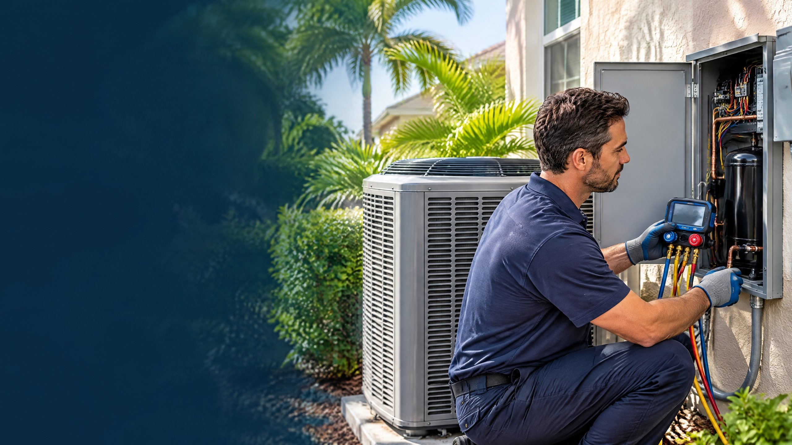

Direct Answer
Replacing a confirmed failed AC compressor can be reasonable when the system is relatively new, the remaining equipment is in good condition, parts are available, and warranty coverage reduces the repair burden. Compare a complete-system proposal when the AC is older, has repeated repairs, uses harder-to-source refrigerant, or has other major components in poor condition.

A compressor is a major part of a central air conditioner, but a compressor quote does not automatically mean the complete system should be replaced. The right comparison begins with what failed, why it failed, what the warranty covers, and how the rest of the equipment is performing.
In Tampa and surrounding North Tampa communities, dependable cooling matters, but one symptom is not a diagnosis. A focused AC repair evaluation should separate compressor failure from electrical, control, airflow, and refrigerant problems.
Start With a Confirmed Compressor Diagnosis
Warm air, a silent outdoor unit, breaker trips, hard starting, or unusual sound can justify service, but none proves internal compressor failure by itself. Carrier’s compressor guidance notes that thermostat, power, capacitor, refrigerant, and protection-control conditions can keep a compressor from starting.[4]
Before approving AC compressor replacement, ask what tests confirmed the diagnosis. Depending on the system, that can include supply voltage, starting components, winding resistance, current draw, refrigerant pressures, temperature readings, and evidence of an internal electrical or mechanical problem.
A failed AC capacitor or AC contactor can prevent the compressor from operating even when the sealed compressor itself remains functional. Replacing the compressor without identifying the starting-circuit condition would miss the actual cause.
Ask for the cause, not only the failed part
If the compressor is confirmed failed, ask whether the failure involved electrical damage, loss of refrigerant, contamination, overheating, or another system condition. The repair scope should address the reason for failure where it can be identified.
Why Compressor Replacement Is a Major Repair
The compressor moves refrigerant through the cooling circuit and raises its pressure so the system can transfer indoor heat outdoors.[4] Replacing it requires opening the sealed refrigerant circuit, removing and installing equipment-specific components, checking the electrical system, evacuating the circuit, and restoring the correct refrigerant charge.
The U.S. Environmental Protection Agency requires Section 608 certification for technicians whose service or repair work could release regulated refrigerants.[3] That is one reason a compressor replacement is not a homeowner project or a simple parts swap.
The quote can change with compressor type, equipment capacity, model compatibility, access, warranty status, refrigerant, required materials, and whether contamination or another failed component must be addressed. A useful proposal should identify the complete scope rather than list only one compressor part. For the questions to ask before authorizing the work, see our Tampa AC repair quote guide.
Six Factors That Shape the Decision
| Factor | When compressor replacement may make sense | When to compare a complete system |
|---|---|---|
| Diagnosis | Internal failure is measured and the cause is understood | Failure is uncertain or other major problems remain unresolved |
| Warranty | Meaningful parts coverage remains and total responsibility is clear | Coverage is limited, expired, or leaves substantial related work outside the warranty |
| System age | Equipment is relatively new with useful service life expected | Equipment is older and age combines with other replacement indicators |
| Repair history | The compressor is an isolated major repair | Multiple recent repairs or unresolved performance problems exist |
| Refrigerant and parts | Compatible parts and refrigerant are reasonably serviceable | Availability, compatibility, or obsolete components complicate the repair |
| Remaining equipment | Indoor coil, outdoor coil, blower, controls, and cabinet remain in suitable condition | Other major components are deteriorated, mismatched, or likely to require near-term work |
No single row decides the outcome. A covered repair on sound equipment is different from a major repair on aging equipment with other known problems.
When Replacing Only the Compressor Can Be Reasonable
Compressor replacement can be a practical repair when the diagnosis is firm, the equipment is not near the end of its expected service period, and the rest of the system is in good condition. Strong parts coverage can also change the comparison, especially when the homeowner understands which labor, refrigerant, shipping, materials, and related parts remain outside the warranty.
Ask whether the proposed replacement compressor is approved for the exact equipment model and refrigerant. The quote should also explain whether additional components are needed, how contamination will be handled if present, and what workmanship coverage applies to the completed repair.
Repairing the compressor does not change the original efficiency rating, capacity, coil condition, duct design, or controls. It restores a failed component within the existing system. That distinction matters when comparing the repair with a broader efficiency or comfort upgrade.
When a Complete-System Comparison Is Worth Requesting
ENERGY STAR recommends considering replacement when an air conditioner or Heat Pump is more than 10 years old, and it also identifies frequent repairs and rising energy use as reasons to discuss replacement with a contractor.[1] Those are comparison signals, not an automatic requirement to replace every older compressor failure.
AHRI advises equipment owners to weigh age, maintenance cost, replacement cost, refrigerant, efficiency, performance, reliability, and available alternatives.[2] It also advises checking the equipment nameplate or documentation to identify the refrigerant. That information can affect serviceability and parts planning.
A complete-system proposal deserves comparison when the compressor repair would preserve equipment that already has significant coil deterioration, repeated electrical failures, poor comfort, persistent humidity problems, or other major concerns. If replacement is considered, review the broader AC replacement cost factors rather than comparing only two headline totals.
Questions to Ask Before Authorizing Either Option
- What measured test confirmed internal compressor failure? Ask for the diagnosis in plain language and whether starting components and controls were tested.
- What likely contributed to the failure? Ask whether the repair scope addresses the identified electrical, refrigerant, contamination, airflow, or heat-related condition.
- What does the warranty cover? Separate the compressor part from labor, refrigerant, shipping, materials, related parts, and future workmanship coverage.
- What refrigerant does the system use? Confirm the nameplate information, availability, and compatibility with the proposed repair.
- What is the condition of the remaining system? Review both coils, blower, controls, cabinet, electrical components, drain system, and relevant duct conditions.
- If replacement is proposed, what exactly is included? Request model numbers, capacity, a Manual J sizing basis, matched ratings, installation scope, permit responsibility, controls, and warranties. The AC replacement quote checklist provides a structured comparison.
If a replacement proposal emphasizes efficiency, use the Tampa SEER2 guide to separate the published rating from sizing, matching, installation, duct scope, controls, and the home’s actual needs.
What Changes the Answer for a Tampa Home?
Tampa homeowners depend heavily on cooling, so downtime and the condition of the complete system matter. That does not make replacement the default. It makes an accurate diagnosis, parts plan, and realistic comparison more important.
Ask whether the repair can return the existing system to normal operation without leaving another major known problem. If the compressor failure is one part of a broader condition, request both scopes in writing and compare what each option resolves.
On The Way Heating & Air is local and family-rooted. Dustin Miller began working in HVAC with his father in 2006 and has helped build several service companies. The objective is to explain the measured condition and the available repair or replacement paths without treating one symptom as a complete diagnosis.
Frequently Asked Questions
Does a failed AC compressor mean I need a complete new system?
No. A confirmed compressor failure can sometimes be addressed by replacing the compressor. The decision depends on warranty coverage, system age, refrigerant, repair history, parts availability, and the condition of the indoor and outdoor equipment.
Can a capacitor or contactor look like a bad compressor?
A failed capacitor, contactor, control, power problem, or protection device can keep a compressor from starting. A technician should test the complete starting and electrical circuit before concluding that the compressor itself has failed.
Does a compressor parts warranty cover the complete repair?
Not necessarily. Coverage varies by manufacturer, registration, equipment age, and warranty terms. Ask whether the compressor part, labor, refrigerant, materials, shipping, and related components are covered or billed separately.
What should I compare with a compressor replacement quote?
Compare the confirmed cause, total scope, warranty coverage, refrigerant, condition of the remaining equipment, and repair history. If a complete system is also proposed, compare its model numbers, matched rating, sizing basis, installation scope, permits, controls, and warranties.
Sources
- ENERGY STAR: When Is It Time to Replace?
- Air-Conditioning, Heating, and Refrigeration Institute: Equipment Owners
- U.S. Environmental Protection Agency: Section 608 Technician Certification Requirements
- Carrier: What Is an AC Compressor?
Reviewed by a Local HVAC Owner
Dustin Miller, Owner of On The Way Heating & Air. Dustin began working in HVAC with his father in 2006 and has helped build several service companies. This article provides general homeowner guidance; the appropriate decision depends on measured diagnosis, warranty terms, equipment condition, refrigerant, parts availability, and the complete written scope presented for the home.